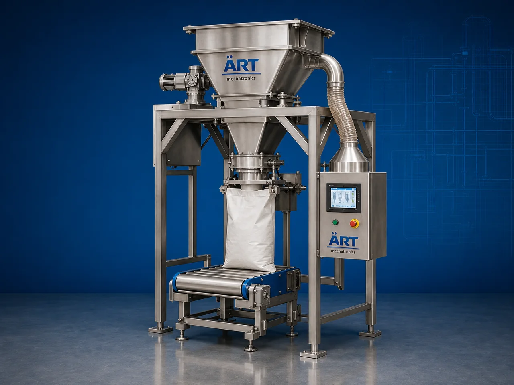

Sack & Bag Filling Machine (Automatic Sack and Bag Filling System)
A Sack & Bag Filling Machine, also known as a Bag Filling Machine, Sack Filling System, Bulk Bag Filling Machine, or Automatic Bagging Machine, is an advanced industrial packaging solution designed for automatic weighing, dosing, filling, bag clamping, sack positioning, sealing, stitching, conveying, and high-speed bulk material packaging operations for powders, granules, grains, minerals, chemicals, fertilizers, animal feed, and industrial bulk materials.

About the Sack & Bag Filling Machine
Sack and bag filling systems are widely used for:
- Grain sack filling
- Flour bag filling
- Cement sack packaging
- Chemical bagging applications
- Fertilizer sack filling
- Animal feed bagging
- Mineral powder packaging
- Bulk material filling operations
The machine improves:
- Filling accuracy
- Packaging speed
- Bulk handling efficiency
- Product hygiene
- Labor productivity
- Packaging consistency
- Dispatch efficiency
Industrial sack and bag filling machines use:
- Servo synchronized weighing systems
- Automatic bag clamping systems
- PLC and HMI automation controls
- Precision dosing mechanisms
- Automatic conveying and stitching systems
to automatically fill and seal sacks and bags with superior weighing accuracy and high production efficiency.
Sack & bag filling machines are widely used in industries such as:
Food processing industries Flour industries Rice industries Chemical industries Cement industries Mineral industries Fertilizer industries Animal feed industries Construction material industries
where high-speed bulk packaging and accurate weighing operations are essential.
The machine is highly suitable for:
- Flour sack filling
- Grain bagging
- Cement sack packaging
- Chemical powder filling
- Feed bagging systems
- Fertilizer packaging
- Mineral powder bagging
ART Mechatronics offers high-performance sack & bag filling machines, engineered for continuous industrial operation, accurate weighing performance, durable construction, and reliable long-term packaging automation.
Working Principle of Sack & Bag Filling Machine
- 1. Empty Sack / Bag Positioning Empty sacks or bags are manually or automatically positioned into bag clamping section.
- 2. Product Weighing Process Machine automatically weighs product using precision load cell and dosing systems.
Servo synchronization ensures accurate weighing and smooth material flow.
- 3. Sack & Bag Filling Operation Machine handles: ✔ Flour ✔ Grains ✔ Cement ✔ Fertilizers ✔ Minerals ✔ Chemicals ✔ Animal feed
accurately and continuously.
- 4. Bag Closing & Sealing Process Machine performs: Bag stitching Heat sealing Valve sealing Leak-proof bag closing operations
for secure transportation and storage packaging quality.
- 5. Conveyor & Dispatch Integration Filled sacks and bags transferred automatically through: Conveyors Bag flatteners Check weighers Metal detectors Palletizing systems
- 6. Finished Bag Discharge Finished bags discharged automatically for: Warehouse storage Truck loading Dispatch operations Export shipment handling
Types of Sack & Bag Filling Machines
- 1. Open Mouth Bag Filling Machine Designed for: ✔ Grain, flour, and feed bagging applications
- 2. Valve Bag Filling Machine Suitable for: ✔ Cement and powder packaging systems
- 3. Jumbo Bag Filling Machine Uses: ✔ Bulk material and FIBC packaging applications
- 4. Automatic Bag Filling Machine Designed for: ✔ High-speed industrial bulk packaging systems
- 5. Servo Driven Sack Filling Machine Suitable for: ✔ Precision high-speed weighing and filling operations
- 6. Fully Automatic Sack & Bag Filling System Designed for: ✔ Complete industrial bagging automation lines
Industries Using Sack & Bag Filling Machines
🌾 Grain & Flour Industry Rice, wheat, flour, pulses, and cereal sack filling systems. ⚗️ Chemical Industry Chemical powder, granules, pigments, and industrial material bagging systems. 🏗️ Cement & Construction Industry Cement, mortar, gypsum, fly ash, and construction material sack packaging systems. 🌱 Fertilizer Industry Fertilizer granule and agricultural product bagging systems. 🐄 Animal Feed Industry Cattle feed, poultry feed, fish feed, and animal nutrition bagging systems. ⛏️ Mineral Industry Mineral powder, silica, calcium carbonate, and mining material sack filling systems.
Features & Advantages
- High-speed automatic sack and bag filling operation
- Accurate weighing and synchronized material handling
- Strong and secure bulk packaging quality
- PLC and servo automation control systems
- Improves dispatch and warehouse efficiency
- Reduces labor dependency and material wastage
- Supports multiple sack and bag sizes
- Reliable long-term industrial performance
- Smooth and continuous bulk packaging operation
Technical Highlights
Machine Type: Automatic sack filling machine Industrial bag filling machine Bulk material filling system Packaging Material: PP woven sacks Paper bags Valve bags FIBC jumbo bags Filling Integration: Load cell weighing systems Screw feeders Gravity feeders Belt feeding systems Features: PLC control system Servo synchronization Touchscreen HMI Automatic bag clamping Conveyor integration Sealing Type: Bag stitching Heat sealing Valve sealing Automation: Semi-automatic Fully automatic industrial systems
Turnkey Sack & Bag Filling Solutions
ART Mechatronics offers: Complete sack and bag filling systems Automatic bulk bagging solutions Packaging automation integration systems Conveyor synchronization systems Installation & commissioning After-sales service & AMC
Why Choose Art Mechatronics
Expertise in industrial packaging and automation systems Customized sack and bag filling solutions for multiple industries High-performance and durable bagging technology Advanced PLC and servo automation systems Proven industrial packaging performance across sectors
Applications
Flour Mills Rice Processing Plants Cement Manufacturing Plants Chemical Industries Fertilizer Manufacturing Units Animal Feed Industries
Industries that use the Sack & Bag Filling Machine
Get pricing & specs for the Sack & Bag Filling Machine
Share the product, target capacity, current process and plant location. These details help our engineers discuss the right machine or line configuration.
One partner, from design to start-up
ART Mechatronics designs, manufactures, installs and commissions your Sack & Bag Filling Machine solution with regional presence in India, UAE and Thailand.